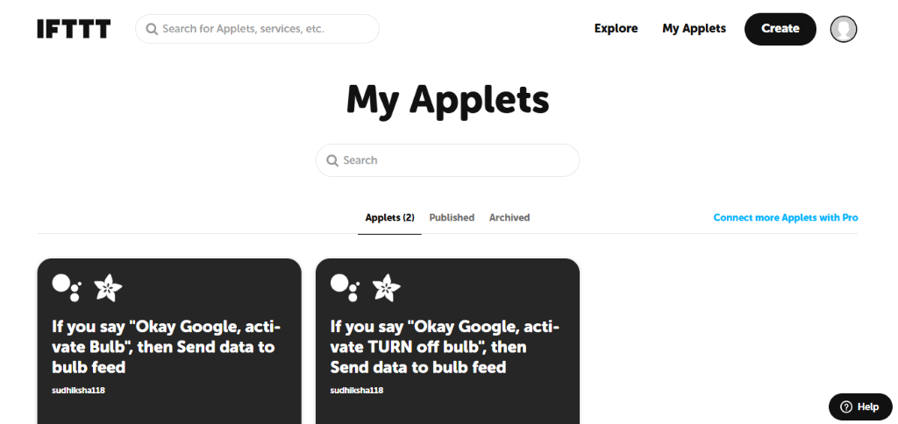
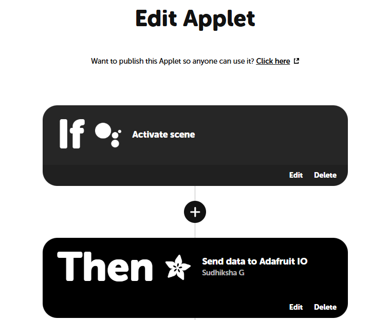
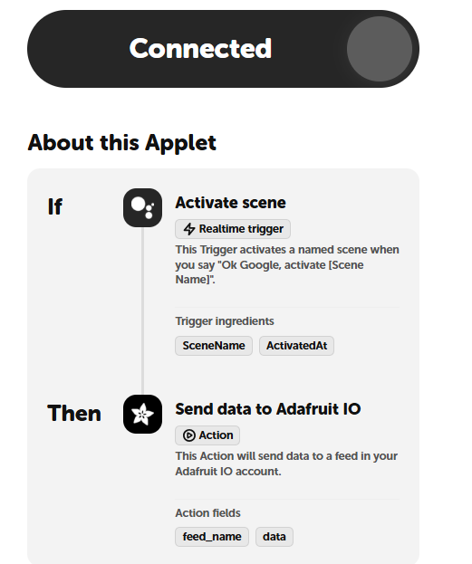

Statement and System Summary
Objective
- To develop an IoT-based automation system using ESP32, IFTTT, Adafruit IO, and MQTT.
- To demonstrate automatic communication between an external trigger and an IoT device.
- To enable the ESP32 to perform an action without requiring manual user control.
- To understand the integration of cloud-based IoT platforms with hardware devices.
- To control an actuator, such as an LED or electric bulb, based on an automated command.
Problem Being Addressed
- In a basic IoT system, the user needs to manually control the connected device.
- Manual control requires continuous interaction through a dashboard or mobile application.
- Such systems may not respond automatically to external events.
- IoT automation can eliminate the need for continuous manual intervention.
- A predefined event can be used to automatically generate a command for the IoT device.
- The system can then process the command and perform the required action.
Project Summary
- IFTTT is used as the automation platform.
- Adafruit IO is used as the IoT cloud platform.
- An IFTTT Applet is configured to detect a predefined trigger.
- When the trigger occurs, IFTTT automatically updates a feed on Adafruit IO.
- The ESP32 connects to Adafruit IO using the MQTT protocol.
- The ESP32 continuously monitors the specified Adafruit IO feed.
- When a new value is received, the ESP32 processes the command.
- Based on the received value, the ESP32 changes the state of the connected LED / Electric Bulb.
- This process enables automatic control of the IoT device without direct user intervention.
External Trigger
Voice phrase or event initiates workflow.
IFTTT
Matches Applet logic and dispatches action.
Adafruit IO
Cloud platform receives data and updates feed.
MQTT
Ultra-low overhead protocol pushes feed state.
ESP32
Subscribed client parses incoming ON/OFF.
LED / Actuator
Relay module switches physical load.
What I Learnt & 11-Stage Automation Lifecycle
End-to-End Voice Automation Lifecycle
Complete 11-stage trace from acoustic voice command to physical 230V AC electric bulb illumination
- Spoken command: "Activate bulb ON" or "Activate TURN off bulb"
- Hands-free acoustic trigger captured via smartphone or smart home microphone
- Receives voice command via Natural Language Processing (NLP)
- Identifies user intent through trained semantic models
- Activates the configured IFTTT integration trigger
- Receives incoming real-time trigger webhook from Google Assistant
- Matches the defined Applet rule in user's account
- Starts execution of the automation workflow
- Processes the matched event payload
- Generates an action targeting the Adafruit IO service
- Sends authenticated cloud command with configured value
- Receives the command from IFTTT via secure REST endpoint
- Updates target feed
bulb(orbulb-control) with new payload - Publishes new value to the internal MQTT message broker
- Transfers feed value over persistent TCP socket (Port 1883)
- Uses MQTT topic
sudhiksha/feeds/bulb - Delivers message with minimal 2-byte header overhead to active subscribers
- Subscribes to topic via
Adafruit_MQTT_Subscribe - Receives incoming MQTT packet inside non-blocking polling loop
- Reads incoming payload value (
"ON"or"OFF")
- Checks received string value against command conditions
- Active-LOW logic:
ON → LOW(Energizes Relay Coil) - Active-LOW logic:
OFF → HIGH(De-energizes Relay Coil)
- Output voltage state transitions cleanly (0V or 3.3V)
- Drives relay module optocoupler input pin
- Provides instant hardware control signal with sub-millisecond edge
- Receives control signal from ESP32 output pin
- Internal electromagnetic coil is energized (LOW) or released (HIGH)
- Electrical contact changes state: COM connects to NO
- 230V AC mains electrical circuit is closed and completed
- Bulb socket receives power safely through isolated contacts
- Bulb illuminates immediately in the room!
Physical Hardware Testing & Video Demonstration
Working Demonstration Video — Task 3 Voice & Cloud Automation
Complete Automation Demonstrated
Demonstrating end-to-end voice control using Google Assistant, IFTTT applets, Adafruit IO, and the ESP32 connected to a 5V relay module and AC electric bulb.
- 0:00ESP32 connected to Wi-Fi and subscribed to Adafruit IO MQTT feed.
- 0:03Spoken command "Activate Bulb" detected by Google Assistant.
- 0:06IFTTT updates Adafruit IO feed with payload string "ON".
- 0:08ESP32 drives GPIO 26 LOW, energizing relay and turning bulb ON.
- 0:12Shutoff command demonstrated, safely restoring circuit to OFF.

1. Configured Voice Applets
Two distinct applets configured: "Activate Bulb" and "Activate TURN off bulb".

2. Trigger & Action Pipeline
IF Google Assistant Activate Scene THEN Send data to Adafruit IO.

3. Realtime Trigger & Action Fields
Scene ingredients mapped to feed_name: bulb and payload data: ON/OFF.
Hardware & Wiring Specifications
| ESP32 Pin | Component Pin | Signal Type | Electrical Function |
|---|---|---|---|
| GPIO 26 | Relay IN | Digital Output (Active-LOW) | LOW (0V) = Relay ON, HIGH (3.3V) = Relay OFF |
| VIN (5V) | Relay VCC | 5V DC Power | Energizes electromagnetic switching coil |
| GND | Relay GND | 0V DC Ground | Common system ground reference |
| Relay COM | 230V AC Mains Phase | Mains AC Line | Utility power input terminal |
| Relay NO | Bulb Phase Lead | Switched AC Line | Closes circuit to light bulb when energized |
Implementation & ESP32 Source Code
#include <WiFi.h>
#include "Adafruit_MQTT.h"
#include "Adafruit_MQTT_Client.h"
// Wi-Fi credentials
#define WIFI_SSID "protosem"
#define WIFI_PASSWORD "Proto#123"
// Adafruit IO credentials
#define AIO_SERVER "io.adafruit.com"
#define AIO_SERVERPORT 1883
#define AIO_USERNAME "sudhiksha"
#define AIO_KEY "aio_YOUR_ADAFRUIT_IO_KEY"
// Relay pin mapping (Active-LOW: LOW=ON, HIGH=OFF)
#define RELAY_PIN 26
WiFiClient client;
Adafruit_MQTT_Client mqtt(&client, AIO_SERVER, AIO_SERVERPORT, AIO_USERNAME, AIO_KEY);
Adafruit_MQTT_Subscribe bulb = Adafruit_MQTT_Subscribe(&mqtt, AIO_USERNAME "/feeds/bulb");
void connectWiFi() {
Serial.print("Connecting to Wi-Fi");
WiFi.begin(WIFI_SSID, WIFI_PASSWORD);
while (WiFi.status() != WL_CONNECTED) {
delay(500);
Serial.print(".");
}
Serial.println("\nWi-Fi connected! IP: ");
Serial.println(WiFi.localIP());
}
void connectMQTT() {
Serial.print("Connecting to Adafruit IO MQTT...");
int8_t ret;
while ((ret = mqtt.connect()) != 0) {
Serial.println(mqtt.connectErrorString(ret));
mqtt.disconnect();
delay(5000);
Serial.println("Retrying MQTT connection...");
}
Serial.println("\nMQTT connected!");
}
void setup() {
Serial.begin(115200);
pinMode(RELAY_PIN, OUTPUT);
digitalWrite(RELAY_PIN, HIGH); // Safe start: OFF
connectWiFi();
mqtt.subscribe(&bulb);
connectMQTT();
}
void loop() {
if (!mqtt.connected()) {
connectMQTT();
}
Adafruit_MQTT_Subscribe *subscription;
while ((subscription = mqtt.readSubscription(1000)) != NULL) {
if (subscription == &bulb) {
String value = (char *)bulb.lastread;
value.trim();
value.toUpperCase();
Serial.print("Received: ");
Serial.println(value);
if (value == "ON") {
digitalWrite(RELAY_PIN, LOW);
Serial.println("GPIO 26 = LOW -> BULB ON");
} else if (value == "OFF") {
digitalWrite(RELAY_PIN, HIGH);
Serial.println("GPIO 26 = HIGH -> BULB OFF");
}
}
}
}Challenges Faced & Solutions
Root Cause
Initially sending HIGH on "ON" failed to energize the relay because optocoupler triggers when input is pulled LOW.
Solution
Mapped "ON" to digitalWrite(RELAY_PIN, LOW) and "OFF" to digitalWrite(RELAY_PIN, HIGH).
Root Cause
Google Assistant occasionally interpreted commands as native smart home commands rather than IFTTT applets.
Solution
Configured Google Assistant "Activate scene" triggers with exact phrases: "activate Bulb" and "activate TURN off bulb".
Reflection
"Connecting Google Assistant, IFTTT, and Adafruit IO to the ESP32 demonstrated the true essence of the Internet of Things: decoupling user input from direct hardware control. By leveraging cloud rule engines, hardware can respond intelligently to spoken voice commands without embedding complex natural language models directly onto the microcontroller."
Project Source & Repository
Task 03: IFTTT + Adafruit IO IoT Automation
Contains Arduino sketch, IFTTT applet configurations, and documentation.